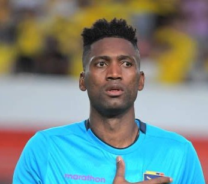

Alexander Domínguez
Liga de Quito
35 Anos
Alexander Domínguez é um futebolista equatoriano que atua como goleiro.

Equador, ou República do Equador, é um país sul-americano localizado na região da América Andina. Sua capital é a cidade de Quito. Banhado pelo Oceano Pacífico, o clima equatoriano varia de quente e úmido ao frio de montanha nos terrenos mais elevados, que correspondem à Cordilheira dos Andes. Parte do seu território integra a Bacia do Amazonas, onde se localiza uma parcela da Floresta Amazônica. O país possui 17.888.000 habitantes, maioria dos quais vive nas cidades, e economia baseada na exportação de petróleo e de recursos minerais.

Alexander Domínguez é um futebolista equatoriano que atua como goleiro.
Hernán Galíndez é um futebolista equatoriano que atua como goleiro.
Moisés Ramírez é um futebolista equatoriano que atua como goleiro.
Ángelo Preciado é um futebolista equatoriano que atua como defensor.
Diego Palacios é um futebolista equatoriano que atua como defensor.
Félix Torres é um futebolista equatoriano que atua como defensor.
Jackson Porozo é um futebolista equatoriano que atua como defensor.
Pervis Estupiñán é um futebolista equatoriano que atua como defensor.
Piero Hincapié é um futebolista equatoriano que atua como defensor.
Robert Arboleda é um futebolista equatoriano que atua como defensor.
William Pacho é um futebolista equatoriano que atua como defensor.
Xavier Arreaga é um futebolista equatoriano que atua como defensor.
Alan Franco é um futebolista equatoriano que atua como Meio-campista.
Ayrton Preciado é um futebolista equatoriano que atua como Meio-campista.
Carlos Gruezo é um futebolista equatoriano que atua como Meio-campista.
Gonzalo Plata é um futebolista equatoriano que atua como Meio-campista.
Jeremy Sarmiento é um futebolista equatoriano que atua como Meio-campista.
Jhegson Méndez é um futebolista equatoriano que atua como Meio-campista.
Jose Cifuentes é um futebolista equatoriano que atua como Meio-campista.
Moisés Caicedo é um futebolista equatoriano que atua como Meio-campista.
Romario Ibarra é um futebolista equatoriano que atua como Meio-campista.
Ángel Mena é um futebolista equatoriano que atua como Meio-campista.
Djorkaeff Reasco é um futebolista equatoriano que atua como Atacante.
Kevin Rodríguez é um futebolista equatoriano que atua como Atacante.
Michael Estrada é um futebolista equatoriano que atua como Atacante.

Énner Valencia é um futebolista equatoriano que atua como Atacante.